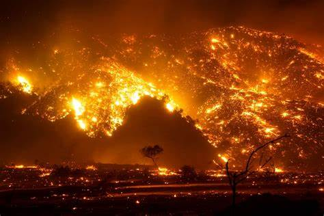

How the Mafia is weaponizing wildfires

Thousands of wildfires tear through southern Italy every year,
fueled by scorching temperatures and the hot, dry,
sirocco winds that sweep in from the Sahara.
The climate crisis is pouring gasoline on these blazes,
but the Mafia may be lighting the spark,
according to new research.